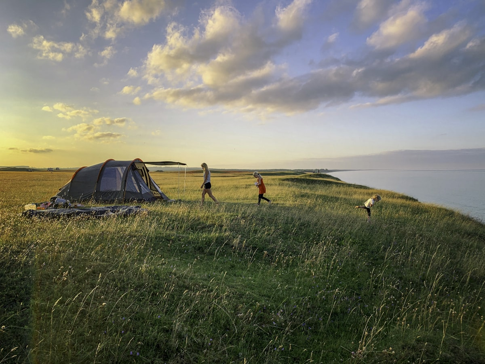
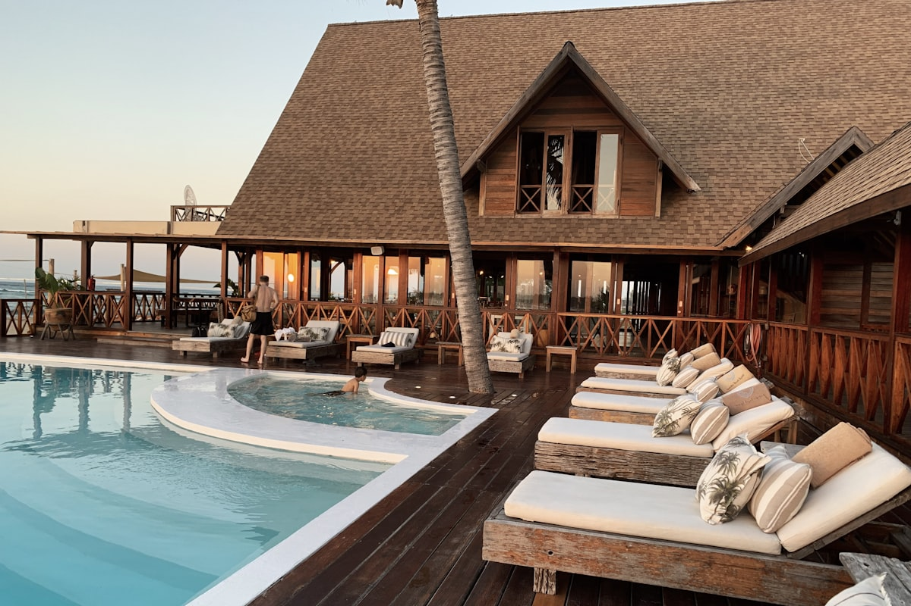
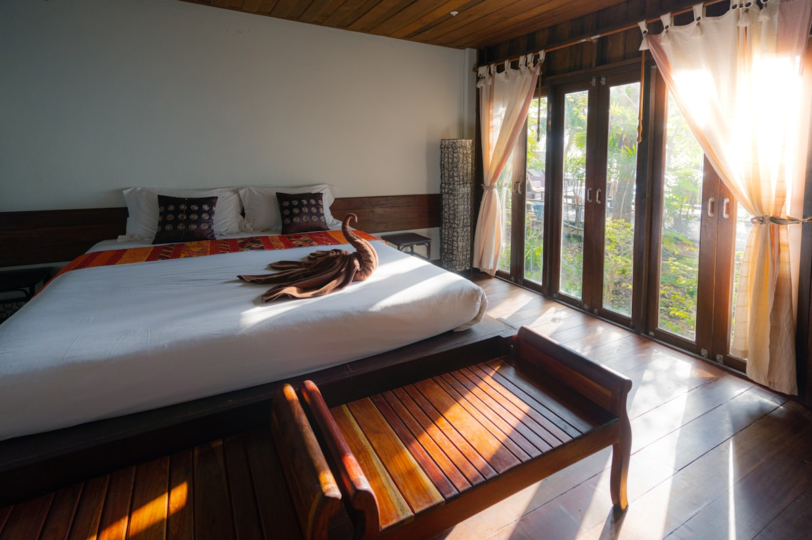

북해도 일자리창출 · 노인일자리
마을기업 선진지견학
정선군청 경제과 | 기수당 14명(+1TG)
1차 2026.10.20(화) ~ 10.23(금)
2차 2026.10.27(화) ~ 10.30(금)
청주공항 출발 · 에어로케이(RF) · 신치토세
연수 목적
정선군의 당면 과제인 일자리 창출, 노인일자리, 마을기업(지역공동체) 정책을 북해도 현장 사례와 대조·학습하여, 단순 관광이 아닌 경제과 업무에 바로 적용 가능한 선진지견학으로 기획했습니다.
공식방문지 안내
노인일자리(시니어클럽 등)·지역공동체운영기업 등 공식방문지는 확정 컨펌 후 기관명·방문 포인트·질의 가이드를 상세 업데이트합니다. 현재 일정에는 벤치마킹 슬롯이 확보되어 있습니다.
정선군 일자리·마을기업을 위한
3가지 연수 핵심 포인트
오사카 지역화폐 연수에서 이어진 경제과 맞춤형 기획 — 테마를 북해도 일자리·공동체 모델로 전환했습니다.
노인일자리 · 시니어클럽
일본의 시니어클럽·실버인재센터형 노인일자리 운영 체계를 공식방문으로 시찰합니다. 정선형 노인일자리 사업의 참여율·역할 설계·민간 연계 방안을 현장 질의로 도출합니다.
시니어 고용 & 사회참여마을기업 · 지역공동체
지역공동체운영기업(마을기업)의 수익모델·거버넌스·일자리 창출 구조를 벤치마킹합니다. 로컬 자원(관광·공예·농식품)을 일자리와 연결하는 일본 현장 노하우를 수집합니다.
마을기업 & 로컬 경제관광·로컬산업 일자리 파급
도야 온천관광, 오타루 공예·상권, 삿포로 맥주박물관 등 관광·6차산업이 고용을 만드는 구조를 체감하고 정선 관광·특산물 일자리 정책에 적용 가능한 시사점을 정리합니다.
일자리창출 & 관광산업기수별 항공편 안내
청주공항(CJJ) ↔ 신치토세(CTS) · 에어로케이(RF) · 1·2차 공통 스케줄
에어로케이 RF352
청주 08:25 신치토세 10:55
에어로케이 RF351
신치토세 11:55 청주 14:45
청주공항 이용 안내
여유 있게 집결
단체 수속 대비
인솔자 안내 시간 준수
여권 확인
유효기간 6개월 이상
필수 확인
일본 전원
100V · 돼지코
(변환 어댑터) 지참
온천 유의사항
타투·문신 시
대욕장 입장 제한
스마트 동선 및 상세 일정
일자별 버튼을 눌러 이동 동선을 확인하세요. 공식방문지 상세는 확정 후 업데이트됩니다.
📍 1일차: 신치토세 → 노보리베츠 → 도야 온천
입국 · 노보리베츠 · 도야 온천
청주 → 신치토세 → 노보리베츠 → 도야
중: 시대촌 · 석: 호텔 뷔페 · ♨온천
투어메이커 플래너 노트
도착 당일 노보리베츠 지옥계곡·다테 시대촌을 거쳐 도야 온천으로 이동합니다. 온천관광 지역의 고용·서비스 인프라를 첫날부터 체감합니다.
🛫 08:25 청주 출발 / 10:55 신치토세 도착
에어로케이(RF352). 입국 수속 후 스루가이드·전용차량 미팅 → 노보리베츠 이동(약 1시간 10분)
♨️ 노보리베츠 지옥계곡
연기가 끊임없이 뿜어져 나오는 노보리베츠의 상징 지열 경관 시찰
🏯 다테 시대촌 관광
중식(시대촌) 후 도야로 이동(약 1시간)
🏨 도야 썬팔레스호텔 체크인 · 석식 · 온천욕
또는 동급 / 2인1실 / 호텔 뷔페식


숙소 및 이동 차량 안내
2인1실 기준 · 수배 상황에 따라 동급 호텔로 변경될 수 있습니다.

도야 썬팔레스호텔
도야호수 인근 온천 호텔. 도착일 피로 회복을 위한 온천욕과 뷔페 석식을 제공합니다. (또는 동급)

아파리조트 삿포로
삿포로 시내 접근성이 좋은 리조트형 숙소로, 공식방문·오타루 일정 후 휴식과 온천욕이 가능합니다. (또는 동급)
중형 전용버스 & 스루가이드 · 통역(2회)
기수당 14명(+1TG) 규모에 맞춘 중형 전용버스와 전일정 스루가이드가 동행합니다. 공식방문 일정에는 통역 2회가 포함되며, 일본 관광법에 따라 차량은 하루 10시간 이내 운행됩니다.
🎬 영상으로 미리 만나는 홋카이도
도야·오타루·삿포로 일대의 분위기를 미리 확인해 보세요.
출장 전 준비물 체크리스트
체크 내용은 본인 스마트폰에 자동 저장됩니다.
필수 준비물
벤치마킹 메모장
비상 연락망
정선군청과 함께하는 종이 없는 친환경 출장
본 디지털 가이드북으로 인쇄물을 대체하여 탄소·자원 절감 효과를 달성합니다.
종이 절감
40장
탄소 배출 감소
188g
물 절약
400L